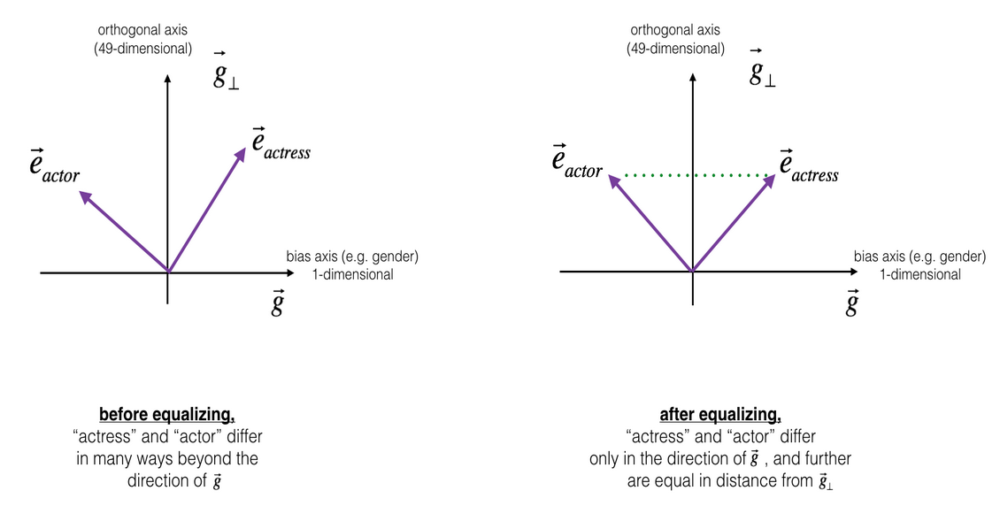

Embedded bias¶
How to deal with words in mathematical models?
represent words with numbers!
Method 1: bag-of-words¶
make list of occurring words and give them numbers ordered by frequency
‘the’ ->
1‘it’ ->
2…
‘embedding’ ->
23579
Problems:
huge one-hot-vectors
hard to train
no context embedded
Method 2: Unsupervised word-vectors¶
use word and its context in reduced vector space (e.g. 300 dim.)
train model such that similar context leads to similar vectors
Pro: Semantics partly encoded in numbers
Problems:
large and very clean corpora necessary
computational hard
General problems¶
No result for out-of-corpus words
Bad for specific language of e.g. scientific terms
Word embeddings are based on contemporary texts
If specific words occur in a limited set of contexts, bias translates from text to numbers
‘man’ occurs with ‘doctor’, but ‘woman’ occurs with ‘nurse’
‘black’ occurs with ‘criminal’
‘muslim’ with ‘radical’
Showing the embedded biasword¶
Based on the blog post:
Marco Peixeiro (2019) Introduction to NLP and bias in AI, TowardsDataScience-Blog
T. Manzini et.al (2019) Black is to Criminal as Caucasian is to Police, ACL Anthology
import numpy as np
The GloVe dataset contains lines with words and their vectors. You have to download the dataset from the source page: Source
Choose the smallest dataset, since this is already around 800MB.
def read_glove_vecs(glove_file):
with open(glove_file, 'r', encoding='utf8') as f:
words = set()
word_to_vec_map = {}
for line in f:
line = line.strip().split()
curr_word = line[0]
words.add(curr_word)
word_to_vec_map[curr_word] = np.array(line[1:], dtype=np.float64)
return words, word_to_vec_map
words, word2vectors = read_glove_vecs('../data/glove.6B.50d.txt')
One way to compare vectors is to calculate their cosine similarity (wikipedia):
similar vectors point in similar directions, the angle between them is small
equal vectors have cosine equals one
exactly opposite vectors have cosine equals minus one
unrelated vectors can have cosine equal zero
Formular:
\(\cos(\theta) = \frac{\textbf{U} \cdot \textbf{V}}{||\textbf{U}|| \cdot || \textbf{V}|| }\)
Using numpy package we can encode this as a function.
The parameters disp and multi allow to change the output or input format. If disp=True the function will print a string with the input words and the calculated value, if its off (default) only the calculated similarity is returned. If multi=True the input is expected as two lists, with two words each. The word vectors are then substracted from each other and the similarity of the new values is calculated.
def cosine_similarity(word1, word2, disp=False, multi=False):
if multi:
u = word2vectors[word1[1].lower()] - word2vectors[word1[0].lower()]
v = word2vectors[word2[1].lower()] - word2vectors[word2[0].lower()]
else:
u = word2vectors[word1.lower()]
v = word2vectors[word2.lower()]
cossim = np.dot(u, v) / (np.sqrt(np.sum(u**2)) * np.sqrt(np.sum(v**2)))
if disp:
return print('cos_sim({0}, {1}) = {2}'.format(word1, word2, cossim))
return cossim
Working with word vectors¶
Experiment with the function!
How does the similarity of (father,mother) compares to e.g. (rocket,cake)?
Calculate the similarity for [‘rome’,’italy’] and [‘france’,’paris’].
Why does the sign change for [‘rome’,’italy’],[‘paris’,’france’] ?
cosine_similarity(???,???,disp=True)
cosine_similarity(???,???,disp=True)
cosine_similarity([???,???], [???,???], disp=True, multi=True)
Are there semantics captured ?¶
To have a look at semantics, we have to be able to analyse relations like
Man is to woman as king is to X (e.g. queen)
Since words are now encoded as vectors, we can calculate (woman - man), which forms a new vector. Since we are looking for a word X such that (X - king) is similar to (woman - man), we can iteratively scan all words of the corpus.
If the cosine similarity of cos_sim((woman-man),(X-king)) for a target word X is larger then the similarity of the word before, we take not of the word and the similarity and repeat.
In the end, the word with the largest similarity is returned. If disp=True the input words are printed as well.
def complete_analogy(word1, word2, word3, disp=True):
word1, word2, word3 = word1.lower(), word2.lower(), word3.lower()
words = word2vectors.keys()
max_cosine_sim = -100 # Initialize max_cosine_sim to a large negative number
best_word = None # Initialize best_word with None, it will help keep track of the word to output
for w in words:
if w in [word1, word2, word3] :
continue
cosine_sim = cosine_similarity([word1,word2], [word3,w], multi=True)
# If the cosine_sim is more than the max_cosine_sim seen so far,
# then: set the new max_cosine_sim to the current cosine_sim and the best_word to the current word
if cosine_sim > max_cosine_sim:
max_cosine_sim = cosine_sim
best_word = w
if disp:
return print ('{0} -> {1} :: {2} -> {3}'.format(word1,word2,word3, best_word ))
return best_word
Basics:
Test if embeddings can capture semantics
What is the best word for the trio (italy, italian, spain) ?
And for (germany,berlin,austria) ?
What about bias?
What is the best word for (woman, nurse, man)?
And for (christian, civilians, muslim)?
Discuss these findings
complete_analogy(???,???,???, disp=True)
Is there a gender vector?¶
Take for example the difference between woman and man. Does this encode a “gender” vector?
def vecCosSimilarity(u,v):
cossim = np.dot(u, v) / (np.sqrt(np.sum(u**2)) * np.sqrt(np.sum(v**2)))
return cossim
g = word2vectors['woman'] - word2vectors['man']
print(g)
Check for a range of names if there is a common trend in male or female names.
print ('List of names and their similarities with constructed vector:')
name_list = ['john','eve','priya']
for w in name_list:
print (w, vecCosSimilarity(word2vectors[w], g))
Do the same for charged words, e.g. fashion, guns, etc.
Do you see a trend?
print('Other words and their similarities:')
word_list = ['actor','actress','doctor','nurse']
for w in word_list:
print (w, vecCosSimilarity(word2vectors[w], g))
How to change this ?¶
Not shown, but a simple projection works, if we assume that gender is indeed encoded in g.

Can we use ML to detect bias ?¶
Pre-process Tucholsky corpus with NLP tools
Train GloVe on Tucholsky
Exercise:
Can we see a bias in Tucholsky’s language?
Outlook: Intellectual dept of software¶
We have stepped in the area of unknown software and silently started using programs without understanding them
This has lots of interesting implications and philosophical dimensions!
Cory Doctorow Blog-Post
Technology on top of other technology hides technological dept
Jonathan Zittrain New Yorker Article
Main argument: AI is applied science and limits basic research
Tyler Vigen Collection of Correlations
More data creates also more spurious correlations